농업기계기사 (2021-08-14 기출문제)
1과목: 재료역학
1. 그림과 같은 사각형 단면에서 직교하는 2층 응력 σx= 200MPa, σy = -200MPa 이 작용할 때, 경사면(a-b)에서 발생하는 전단변형률의 크기는 약 얼마인가? (단, 재료의 전단탄성계수는 80GPa이고, 경사각(θ)는 45°이다.)
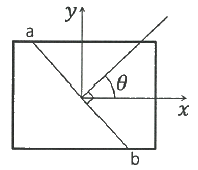
- 0.003125
- 0.0025
- 0.001875
- 0.00125
(정답률: 알수없음)

2. 그림과 같이 4kN/cm의 균일분포하중을 받는 일단 고정 타단 지지보에서 B점에서의 모멘트 MB는 약 몇 kN·m인가? (단, 균일단면보이며, 굽힘강성(EI)은 일정하다.)
- 800
- 2400
- 3200
- 4800
(정답률: 알수없음)
3. 외팔보의 자유단에 하중 P가 작용할 때, 이 보의 굽힘에 의한 탄성 변형에너지를 구하면? (단, 보의 굽힘강성 EI는 일정하다.)
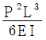
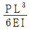
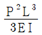
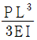
(정답률: 알수없음)
4. 바깥지름 4cm, 안지름 2cm의 속이 빈 원형축에 10MPa의 최대전단응력이 생기도록 하려면 비틀림 모멘트의 크기는 약 몇 N·m로 해야 하는가?
- 54
- 212
- 135
- 118
(정답률: 알수없음)
5. 그림과 같이 길이 10m인 단순보의 중앙에 200kN·m의 우력(couple)이 작용할 때, B지점의 반력(RB)의 크기는 몇 kN 인가?
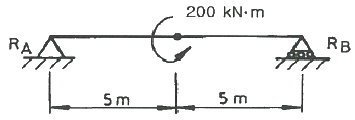
- 10
- 20
- 30
- 40
(정답률: 알수없음)
6. 그림과 같은 직사각형 단면에서 x, y축이 도심을 통과할 때 극관성 모멘트는 약 몇 cm4 인가? (단, b=6cm, h=12cm 이다.)
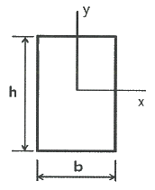
- 1080
- 3240
- 9270
- 12960
(정답률: 알수없음)
7. 단면 치수가 8mm×24mm 인 강대가 인장력 P = 15kN을 받고 있다. 그림과 같이 30° 경사진 면에 작용하는 수직응력은 약 몇 MPa 인가?
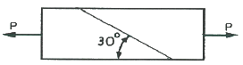
- 19.5
- 29.5
- 45.3
- 72.6
(정답률: 알수없음)
8. 그림과 같이 외팔보에서 하중 2P가 두 군데 각각 작용할 때 이 보에 작용하는 최대굽힘모멘트의 크기는?
- PL/3
- PL/2
- PL
- 2PL
(정답률: 알수없음)
9. 보기와 같은 A, B, C 장주가 같은 재질, 같은 단면이라면 임계 좌굴화중의 관계가 옳은 것은?
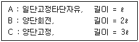
- A ＞ B ＞ C
- A ＞ B = C
- A = B = C
- A = B ＜ C
(정답률: 알수없음)
10. 그림과 같이 반지름 r인 반원형 단면을 갖는 단순보가 일정한 굽힘모멘트를 받고 있을 때, 최대인장응력(σt)과 최대압축응력(σc)의 비(σt/σc)는? (단, e1과 e2는 단면 도심까지의 거리이며, 최대인장응력은 단면의 하단에서, 최대압축응력은 단면의 상단에서 발생한다.)
- 0.737
- 0.651
- 0.534
- 0.425
(정답률: 알수없음)
11. 원형막대의 비틀림을 이용한 토션바(torsionbar) 스프링에서 길이와 지름을 모두 10%씩 증가시킨다면 토션바의 비틀림강성(torsional stiffness, 비틀림 토크/비틀림 각도)은 약 몇 배로 되겠는가?
- 1.1 배
- 1.21 배
- 1.33 배
- 1.46 배
(정답률: 알수없음)
12. 그림과 같이 외팔보의 자유단에 집중하중 P와 굽힘모멘트 Mo가 동시에 작용할 때 그 자유단의 처짐은 얼마인가? (단, 보의 굽힘 강성 EI는 일정하고, 자중은 무시한다.)
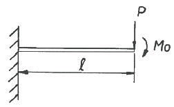
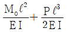
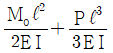
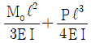
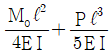
(정답률: 알수없음)
13. 지름 3mm의 철사로 코일의 평균지름 75mm인 압축코일 스프링을 만들고자 한다. 하중 10N에 대하여 3cm의 처짐량을 생기게 하려면 감은 횟수(n)는 대략 얼마로 해야 하는가? (단, 철사의 가로탄성계수는 88GPa 이다.)
- n = 9.9
- n = 8.5
- n = 5.2
- n = 6.3
(정답률: 알수없음)
14. 단면적이 A, 탄성계수가 E, 길이가 L 인 막대에 길이방향의 인장하중을 가하여 그 길이가 δ 만큼 늘어났다면, 이 때 저장된 탄성변형 에너지는?
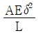
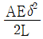
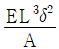
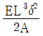
(정답률: 알수없음)
15. 그림에서 784.8N과 평형을 유지하기 위한 힘 F1과 F2는?
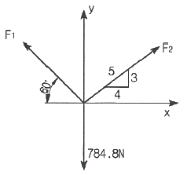
- F1 = 395.2N, F2 = 632.4N
- F1 = 790.4N, F2 = 632.4N
- F1 = 790.4N, F2 = 395.2N
- F1 = 632.4N, F2 = 395.2N
(정답률: 알수없음)
16. 지름이 1.2m, 두께가 10mm인 구형 압력용기가 있다. 용기 재질의 허용인장응력이 42MPa 일 때 안전하게 사용할 수 있는 최대 내압은 약 몇 MPa 인가?
- 1.1
- 1.4
- 1.7
- 2.1
(정답률: 알수없음)
17. 그림과 같은 보의 양단에서 경사각의 비(θA/θB)가 3/4이면, 하중 P의 위치 즉 B점으로부터 거리 b는 얼마인가? (단, 보의 전체길이는 L 이다.)
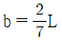
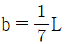
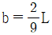
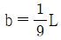
(정답률: 알수없음)
18. 표점길이가 100mm, 지름이 12mm인 강재 시편에 10kN의 인장하중을 작용하였더니 변형률이 0.000253 이었다. 세로탄성계수는 약 몇 GPa 인가? (단, 시편은 선형 탄성거동을 한다고 가정한다.)
- 206
- 258
- 303
- 349
(정답률: 알수없음)
19. 강 합금에 대한 응력-변형률 선도가 그림과 같다. 세로탄성계수(E)는 약 얼마인가?
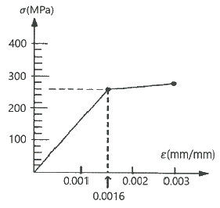
- 162.5 MPa
- 615.4 MPa
- 162.5 GPa
- 615.4 GPa
(정답률: 알수없음)
20. 그림과 같이 균일한 단면을 가진 봉에서 자중에 의한 처짐(신장량)을 옳게 설명한 것은?
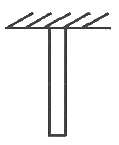
- 비중량에 반비례한다.
- 길이에 정비례한다.
- 세로탄성계수에 정비례한다.
- 단면적과는 무관하다.
(정답률: 알수없음)
2과목: 기계열역학
21. 고열원의 온도가 157℃이고, 저열원의 온도가 27℃인 카르노 냉동기의 성적계수는 약 얼마인가?
- 1.5
- 1.8
- 2.3
- 3.3
(정답률: 알수없음)
22. 그림과 같이 다수의 추를 올려놓은 피스톤이 끼워져 있는 실린더에 들어있는 가스를 계기로 생각한다. 초기 압력이 300kPa이고, 초기 체적은 0.⑤m3 이다. 압력을 일정하게 유지하면서 열을 가하여 가스의 체적을 0.2m3 으로 증가시킬 때 계가 한 일(kJ)은?
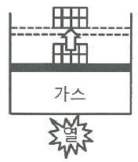
- 30
- 35
- 40
- 45
(정답률: 알수없음)
23. 질량이 m이고, 한변의 길이가 a인 정육면체 상자 안에 있는 기체의 밀도가 ρ이라면 질량이 2m이고 한 변의 길이가 2a인 정육면체 상자 안에 있는 기체의 밀도는?
- ρ
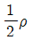
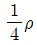
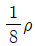
(정답률: 알수없음)
24. 8℃의 이상기체를 가역단열 압축하여 그 체적을 1/5로 하였을 때 기체의 최종온도(℃)는? (단, 이 기체의 비열비는 1.4 이다.)
- -125
- 294
- 222
- 262
(정답률: 알수없음)
25. 다음 그림은 이상적인 오토사이클의 압력(P)-부피(V)선도이다. 여기서 “ㄱ”의 과정은 어떤 과정인가?
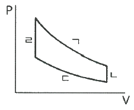
- 단역 압축과정
- 단열 팽창과정
- 등온 압축과정
- 등온 팽창과정
(정답률: 알수없음)
26. 어느 이상기체 2kg이 압력 200kPa, 온도 30℃의 상태에서 체적 0.8m3를 차지한다. 이 기체의 기체상수[(kJ/(kg·K))는 약 얼마인가?
- 0.264
- 0.528
- 2.34
- 3.53
(정답률: 알수없음)
27. 열교환기의 1차 측에서 압력 100kPa, 질량유량 0.1kg/s인 공기가 50℃ 로 들어가서 30℃로 나온다. 2차 측에서는 물이 10℃로 들어가서 20℃로 나온다. 이 때 물의 질량유량(kg/s)은 약 얼마인가? (단, 공기의 정압비열은 1 kJ/(kg·K)이고, 물의 정압비열은 4 kJ/(kg·K)로 하며, 열 교환과정에서 에너지 손실은 무시한다.)
- 0.0⑤
- 0.01
- 0.03
- 0.⑤
(정답률: 알수없음)
28. 외부에서 받은 열량이 모두 내부에너지 변화만을 가져오는 완전가스의 상태변화는?
- 정적변화
- 정압변화
- 등온변화
- 단열변화
(정답률: 알수없음)
29. 비열비 1.3, 압력비 3인 이상적인 브레이턴 사이클(Brayton Cycle)의 이론 열효율이 X(%)였다. 여기서 열효율 12%를 추가 향상시키기 위해서는 압력비를 약 얼마로 해야 하는가? (단, 향상된 후 열효율은 (X+12)%이며, 압력비를 제외한 다른 조건은 동일하다.)
- 4.6
- 6.2
- 8.4
- 10.8
(정답률: 알수없음)
30. 다음 중 그림과 같은 냉동사이클로 운전할 때 열역학 제1법치과 제2법칙을 모두 만족하는 경우는?
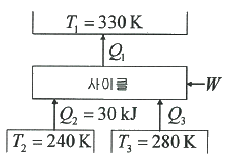
- Q1 = 100kJ, Q3 = 30kJ, W = 30kJ
- Q1 = 80kJ, Q3 = 40kJ, W = 10kJ
- Q1 = 90kJ, Q3 = 50kJ, W = 10kJ
- Q1 = 100kJ, Q3 = 30kJ, W = 40kJ
(정답률: 알수없음)
31. 절대압력 100kPa, 온도 100℃인 상태에 있는 수소의 비체적(m3/kg)은? (단, 수소의 분자량은 2이고, 일반기체상수는 8.3145 kJ/(kmol·K)이다.)
- 31.0
- 15.5
- 0.428
- 0.0321
(정답률: 알수없음)
32. 열전도계수 1.4W/(m·K), 두께 6mm 유리창의 내부 표면 온도는 27℃, 외부 표면 온도는 30℃이다. 외기 온도는 36℃이고 바깥에서 창문에 전달되는 총 복사열전달이 대류열전달의 50배라면, 외기에 의한 대류열전달계수[W/(m2·K)]는 약 얼마인가?
- 22.9
- 11.7
- 2.29
- 1.17
(정답률: 알수없음)
33. 500℃와 100℃ 사이에서 작동하는 이상적이니 Carnot 열기관이 있다. 열기관에서 생산되는 일이 200kW 이라면 공급되는 열량은 약 몇 kW 인가?
- 255
- 284
- 312
- 387
(정답률: 알수없음)
34. 보일러 입구의 압력이 9800 kN/m2이고, 응축기의 압력이 4900N/m2 일 때 펌프가 수행한 일(kJ/kg)은? (단, 물의 비체적은 0.001m3/kg 이다.)
- 9.79
- 15.17
- 87.25
- 180.52
(정답률: 알수없음)
35. 어느 발명가가 바닷물로부터 매시간 1800kJ의 열량을 공급받아 0.5kW 출력의 열기관을 만들었다고 주장한다면, 이 사실은 열역학 제 몇 법칙에 위배되는가?
- 제 0법칙
- 제 1법칙
- 제 2법칙
- 제 3법칙
(정답률: 알수없음)
36. 1kg의 헬륨이 100kPa 하에서 정압 가열되어 온도가 27℃에서 77℃로 변하였을 때 엔트로피의 변화량은 약 몇 kJ/K인가? (단, 헬륨의 엔탈피(h, kJ/kg)는 아래와 같은 관계식을 가진다.)
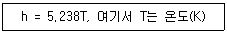
- 0.694
- 0.756
- 0.807
- 0.968
(정답률: 알수없음)
37. 흑체의 온도가 20℃에서 80℃로 되었다면 방사하는 복사 에너지는 약 몇 배가 되는가?
- 1.2
- 2.1
- 4.7
- 5.5
(정답률: 알수없음)
38. 밀폐시스템이 압력(P1) 200kPa, 체적(V1) 0.1m3 인 상태에서 압력(P2) 100kPa, 체적(V2) 0.3m3 인 상태까지 가역 팽창되었다. 이 과정이 선형적으로 변화한다면, 이 과정 동안 시스템이 한 일(kJ)은?
- 10
- 20
- 30
- 45
(정답률: 알수없음)
39. 카르노 열펌프와 카르노 냉동기가 있는데, 카르노 열펌프의 고열원 온도는 카르노 냉동기의 고열원 온도와 같고, 카르노 열펌프의 저열원 온도는 카르노 냉동기의 저열원 온도와 같다. 이 때 카르노 열펌프의 성적계수(COPHP)와 카르노 냉동기의 성적계수(COPR)의 관계로 옳은 것은?
- COPHP= COPR + 1
- COPHP= COPR - 1
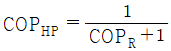
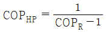
(정답률: 알수없음)
40. 상온(25℃)의 실내에 있는 수은 기압계에서 수은주의 높이가 730mm라면, 이 때 기압은 약 몇 kPa 인가? (단, 25℃기준, 수은 밀도는 13534 kg/m3 이다.)
- 91.4
- 96.9
- 99.8
- 104.2
(정답률: 알수없음)
3과목: 기계유체역학
41. 0.002m3/s 의 유량으로 지름 4cm, 길이 10m인 수평 원관 속을 기름(비중 S= 0.85, 점성계수 μ = 0.⑤6 N·s/m2)이 흐르고 있다. 이 기름을 수송하는데 필요한 펌프의 압력(kPa)은?
- 15.2
- 17.8
- 19.1
- 22.6
(정답률: 알수없음)
42. 평판으로부터의 거리를 y라고 할 때 평판에 평행한 방향의 속도 분포 u(y)가 아래와 같은 식으로 주어지는 유동장이 있다. 유동장에서는 속도 u(y)만 있고, 유체는 점성계수가 μ인 뉴턴 유체일 때 y = L/8 에서의 전단응력은? (단, U와 L은 각각 유동장의 특성속도와 특성길이로서 상수이다.)
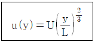
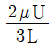
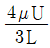
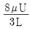
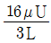
(정답률: 알수없음)
43. 그림과 같이 안지름이 3m인 수도관에 정지된 물이 절반만큼 채워져 있다. 길이 1m의 수도관에 대하여 곡면 B-C 부분에 가해지는 합력의 크기는 약 몇 kN 인가?(문제 오류로 가답안 발표시 4번으로 발표되었지만 확정답안 발표시 모두 정답처리 되었습니다. 여기서는 가답안인 4번을 누르면 정답 처리 됩니다.)
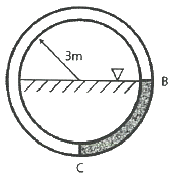
- 59.6
- 65.8
- 74.3
- 82.2
(정답률: 알수없음)
44. 다음 중 표면장력(surface tension)의 차원은? (단, M : 질량, L : 길이, T : 시간이다.)
- MT-2
- ML-2
- M2L
- MLT
(정답률: 알수없음)
45. 다음 △P, L, Q, ρ 변수들을 이용하여 만든 무차원수로 옳은 것은? (단, △P : 압력차, L : 길이, Q : 체적유량, ρ : 밀도이다.)
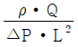
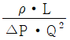
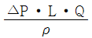
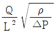
(정답률: 알수없음)
46. 그림과 같이 물이 들어있는 아주 큰 탱킁 사이펀이 장치되어 있다. 사이펀이 정상적으로 작동하는 범위에서, 출구에서의 속도 V와 관련하여 옳은 것을 모두 고른 것은? (단, 관의 지름은 일정하고 모든 손실은 무시한다. 또한 각각의 h가 변화할 때 다른 h의 크기는 변하지 않는다고 가정한다.)
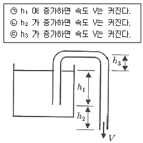
- ㉠, ㉡
- ㉠, ㉢
- ㉡, ㉢
- ㉠, ㉡, ㉢
(정답률: 알수없음)
47. 2m3의 탱크에 지름이 0.⑤m의 파이프를 통하여 점성계수가 0.001 Pa·s인 물을 채우려고 한다. 파이프 내의 유동이 계속 층류를 유지시키면서 물을 완전히 채우려면 최소 몇 시간이 걸리는가? (단, 임계 레이놀즈수는 2000 이다.)
- 2.4
- 6.5
- 7.1
- 11.2
(정답률: 알수없음)
48. 속에 물이 가득 찬 물방울의 표면장력은 0.075 N/m이고, 내부에 공기가 들어있어 내부와 외부의 두 개의 면을 가진 얇은 비눗방울의 표면장력은 0.025 N/m이다. 물방울 내외의 압력차가 비눗방울의 압력차와 같을 때, dW : dS로 옳은 것은? (단, 물방울의 지름은 dW, 비눗방울의 지름은 dS 이다.)
- 1 : 3
- 2 : 3
- 3 : 2
- 3 : 1
(정답률: 알수없음)
49. 입구지름 0.3m, 출구지름 0.5m인 터빈으로 물이 공급되고 있다. 터빈의 발생 동력은 180kW, 유량은 1m3/s 이라면 입구와 출구 사이의 압력강하(kPa)는? (단, 열전달, 내부에너지, 위치에너지 변화 및 마찰손실은 무시하며, 정상 비압축성 유동이다.)
- 11.9
- 23.8
- 46.5
- 92.9
(정답률: 알수없음)
50. 그림과 같이 날개가 유량 0.1m3/s, 속도 20m/s의 물 분류를 받을 경우, 이 날개를 고정하는 데 필요한 힘 F의 크기(절대값)는 약 몇 N 인가? (단, 날개의 마찰은 무시한다.)
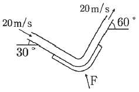
- 4236
- 2828
- 1983
- 1035
(정답률: 알수없음)
51. 그림처럼 수축 수로를 통과하는 1차원 정상, 비압축성 유동에서 수평 중심선상의 속도가
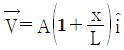
로 주어질 때, x = 0.5L에 위치한 유체 입자의 x 방향 가속도(m/s2)는? (단, A = 0.2m/s, L = 2m 이다.)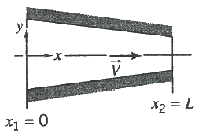
- 0.01
- 0.02
- 0.03
- 0.04
(정답률: 알수없음)
52. 공기가 평판 위를 3m/s의 속도로 흐르고 있다. 선단에서 50cm 떨어진 곳에서의 경계층 두께(mm)는? (단, 공기의 동점성계수는 16×10-6 m2/s 이고, 평판에서 층류유동이 난류유동으로 변하는 경계점은 레이놀즈 수가 5×105인 경우로 한다.)
- 0.41
- 0.82
- 4.1
- 8.2
(정답률: 알수없음)
53. 관내 유동에서 속도를 측정하기 위하여 그림과 같이 관을 삽입하였다. 이 관을 흐르는 유체의 속도(V)를 구하는 식으로 옳은 것은? (단, g는 중력가속도이고, 속도는 단면에서 일정하다고 가정한다.)
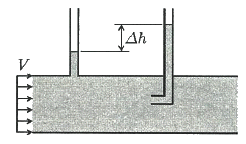
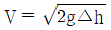
(정답률: 알수없음)
54. 안지름 240mm인 관속을 흐르고 있는 공기의 평균 유속이 10m/s이면, 공기의 질량유량(kg/s)은? (단, 관속의 압력은 2.45×105 Pa, 온도는 15℃, 공기의 기체상수 R = 287 J/(kg·K) 이다.)
- 1.34
- 2.96
- 3.75
- 5.12
(정답률: 알수없음)
55. 가로 2cm, 세로 3cm의 크기를 갖는 사각형 단면의 매끈한 수평관 속을 평균유속 1.2 m/s로 20℃의 물이 흐르고 있다. 관의 길이 1m 당 손실 수두(m)는? (단, 수력직경에 근거한 관마찰계수는 0.024 이다.)
- 0.018
- 0.⑤4
- 0.073
- 0.0026
(정답률: 알수없음)
56. 세 액체가 그림과 같은 U자관에 들어있고, h1= 20cm, h2 = 40cm, h3 = 50cm 이고, 비중 S1 = 0.8, S3 = 2일 때, 비중 S2는 얼마인가?
- 1.2
- 1.8
- 2.1
- 2.8
(정답률: 알수없음)
57. 해수 위에 떠 있는 빙산이 있다. 물 위에 노출된 빙산의 부피가 전체 빙산의 부피에서 차지하는 비율(%)은? (단, 얼음의 밀도는 920 kg/m3, 해수의 밀도는 1030 kg/m3 이다.)
- 9.53
- 10.01
- 10.68
- 11.24
(정답률: 알수없음)
58. 수면에 떠 있는 배의 저항문제에 있어서 모형과 원형 사이에 역학적 상사(相似)를 이루려면 다음 중 어느 것이 가장 중요한 요소가 되는가?
- Reynolds number, Mach number
- Reynolds number, Froude number
- Weber number, Euler number
- Mach number, Weber number
(정답률: 알수없음)
59. 다음 중 2차원 비압축성 유동이 가능한 유동은? (단, u는 x방향 속도 성분이고, v는 y방향 속도 성분이다.)
- u = x2 - y2, v = -2xy
- u = 2x2 - y2, v = 4xy
- u = x2 + y2, v = 3x2 - 2y2
- u = 2x + 3xy, v = -4xy + 3y
(정답률: 알수없음)
60. 지름 8cm의 구가 공기 중을 20m/s의 속도로 운동할 때 항력(N)은? (단, 공기 밀도는 1.2 kg/m3, 항력계수는 0.6 이다.)
- 0.362
- 0.724
- 3.62
- 7.24
(정답률: 알수없음)
4과목: 농업동력학
61. 아래와 같은 기호의 명칭은?
- 공기 탱크
- 유압 모터
- 유압 펌프
- 공기압 모터
(정답률: 알수없음)
62. 다음 중 유압식 브레이크의 작동 원리는?
- 상대성 원리
- 베르누이 원리
- 파스칼의 원리
- 아르키메데스의 원리
(정답률: 알수없음)
63. 디젤기관에 사용되는 연료의 세탄가를 올바르게 설명한 것은?
- 알파 메틸 나프탈렌과 세탄의 관계 비
- 이소 옥탄과 세탄의 관계 비
- 노말 헵탄과 세탄의 관계 비
- 에틸 알콜과 세탄의 관계 비
(정답률: 알수없음)
64. 트랙터 앞바퀴를 앞쪽에서 보면 지면과 수직선에 대하여 1.5° ~ 2.0° 정도로 지면에 닿는 쪽이 좁게 경사져 있다. 이는 축의 비틀림을 적게하여 주행 시 안정성을 유지하는데 중요한 역할을 하는데, 이 각을 의미하는 용어는?
- 토인
- 캐스터각
- 캠버각
- 킹핀 경사각
(정답률: 알수없음)
65. 트랙터의 견인력이 1500N이고, 36km/h로 주행할 때 견인동력은 몇 kW 인가?
- 10
- 15
- 30
- 45
(정답률: 알수없음)
66. 주파수가 60Hz인 교류를 사용하는 전동기의 고정자 극수가 8일 때 동기속도는 몇 rpm 인가?
- 450
- 900
- 1800
- 3600
(정답률: 알수없음)
67. 다음 중 피스톤링의 기능에 대한 설명으로 적절하지 않은 것은?
- 실린더와 피스톤간의 마찰력 증대
- 기밀 유지
- 윤활유 조정
- 실린더 벽의 유막 제어
(정답률: 알수없음)
68. 기관의 배기가스 성분 중에서 인체에 직·간접적으로 영향을 미치는 공해물질이 아닌 것은?
- O2
- NOX
- CO
- HC
(정답률: 알수없음)
69. 트랙터에 대한 설명으로 적절하지 않은 것은?
- 트랙터는 주행 장치의 형태에 따라 차륜형, 궤도형으로 분류할 수 있다.
- 정원용 트랙터는 소형 트랙터로서 보행형과 승용형이 있으며 모어, 제설기 등의 작업기를 부착하여 사용할 수 있다.
- 과수원용 트랙터는 기관의 배기관도 나무에 주는 피해를 줄이기 위해 트랙터 아랫부분에 지면과 수평으로 설치되어 있다.
- 보행형 트랙터는 승용 트랙터에 비해 작업능률이 우수하고 대형이다.
(정답률: 알수없음)
70. 궤도형 트랙터와 비교한 차륜형(바퀴형) 트랙터의 특징으로 적절하지 않은 것은?
- 지상고가 높다.
- 고속도 운전이 가능하다.
- 접지압이 크다.
- 견인력이 크다.
(정답률: 알수없음)
71. 트랙터의 유압제어장치 중 토양상태와 관계없이 일정한 경심으로 작업하기 위한 것은?
- 위치제어장치
- 견인력제어장치
- 부하제어장치
- 엔진제어장치
(정답률: 알수없음)
72. 전동기의 설치 및 운전할 경우 유의 사항으로 적절하지 않은 것은?
- 전동기를 기동할 경우 출력을 최대 상태로 스위치는 빠르고 확실하게 넣어야 한다.
- 전동기축과 작업기축이 일직선 또는 평행이 되도록 한다.
- 정격 퓨즈를 사용한다.
- 베어링 부분의 과열에 주의하고 전동기의 전압이 저하되면 과부하 상태가 되므로 유의한다.
(정답률: 알수없음)
73. 윤활유의 점성계수를 μ, 저널 베어링에 작용하는 수직 하중을 P, 축의 회전수를 N, 마찰계수를 f, 비례상수를 C라 할 때 이들 사이의 관계를 바르게 나타낸 것은?
(정답률: 알수없음)
74. 다음 중 가솔린 기관의 이상연소에 대한 설명으로 옳지 않은 것은?
- 연소실 과열에 의하여 자연 발화되는 것을 조기점화(preignition)라고 한다.
- 날카로운 금속성 음이 발생하는 것을 와일드 핑(wild ping)이라고 한다.
- 표면점화가 여러 곳에서 중복하여 발생하는 것을 럼블(rumble)이라고 한다.
- 점화 스위치를 끊어도 기관이 정지되지 않는 현상을 오버버닝(over-burning)이라고 한다.
(정답률: 알수없음)
75. 운전자가 핸들을 돌려 진행 방향을 임의로 바꾸기 위해 조작되는 장치와 관련 있는 것은?
- 주행장치
- 조향장치
- 동력전달장치
- 제동장치
(정답률: 알수없음)
76. 내연기관에서 4사이클에 대한 다음 설명 중 틀린 것은?
- 4사이클을 4행정 사이클이라고 할 수 있다.
- 크랭크축이 2회전할 때 마다 1회 압축을 반복한다.
- 크랭크축이 4회전할 때 마다 4회 폭발을 반복한다.
- 흡입, 압축, 폭발, 배기의 행정을 반복한다.
(정답률: 알수없음)
77. 3상 유도 전동기에서 영구 자석과 같은 역할을 하는 부분은?
- 회전자
- 정류자
- 고정자 철심
- 고정자 권선
(정답률: 알수없음)
78. 일반적으로 타이어 규격에 포함되지 않는 것은?
- 플라이 수(등급)
- 림의 직경(지름)
- 타이어 폭
- 디스크의 폭
(정답률: 알수없음)
79. 가솔린이 무게에 의한 구성비가 탄소 85%, 수소 15%이고 공기는 무게에 의한 구성비가 산소 23%, 질소 77% 일 때 가솔린 1kg이 완전 연소하는데 필요한 공기의 양은 약 몇 kg 인가?
- 3.5
- 10.1
- 12.5
- 15.1
(정답률: 알수없음)
80. 암 길이가 1000mm인 마찰동력계를 이용하여 1500rpm으로 회전하는 기관의 동력을 구하고자 한다. 이 때 측정 된 저울의 무게가 300N 일 때 이 기관의 축 동력은 약 몇 kW 인가?
- 23.1
- 31.4
- 42.1
- 47.1
(정답률: 알수없음)
5과목: 농업기계학
81. 소맥제분공정에서 원료소맥립을 분쇄하기 좋은 연질상태로 만들기 위해 가수 또는 건조하거나 적당히 가열하는 공정은?
- 조질공정
- 정제공정
- 파쇄공정
- 압쇄공정
(정답률: 알수없음)
82. 이체(plow bottom)의 작업 폭이 36cm인 4조 몰드보드 플라우를 장착하고 작업을 하고 있다. 이때 포장효율이82%이고, 작업속도가 6km/h 이면 유효포장 작업능률은 약 몇 ka/h 인가?
- 0.71
- 7.1
- 71
- 710
(정답률: 알수없음)
83. 다음 중 히트펌프의 4대 구성요소가 아닌 것은?
- 응축기
- 증발기
- 유량계
- 팽창밸브
(정답률: 알수없음)
84. 다음 중 파종기의 대표적인 종류로 묶인 것은?
- 원판형, 구형, 톱니형
- 호우형, 복원판형, 단원판형
- 산파기, 조파기, 점파기
- 원심식, 낙하식, 압송식
(정답률: 알수없음)
85. 일정한 간격의 줄에 종자를 한 알 또는 여러 알씩 일정한 간격으로 파종하는 기계는?
- 이식기
- 산파기
- 난파기
- 점파기
(정답률: 알수없음)
86. 예취부에서 구동날과 고정날 사이에서 마찰저항을 감소시켜 주는 것은?
- 미끄럼판
- 공기실
- 노즐
- 캠
(정답률: 알수없음)
87. 중경제초기에서 제초날의 기본형으로 사용되지 않는 것은?
- 삼각날
- 둥근날
- 반쪽날
- 괭이날
(정답률: 알수없음)
88. 마찰식 정미기에 대한 설명으로 틀린 것은?
- 높은 압력에서 찰리와 마찰작용에 의해 현미의 강층을 제거한다.
- 정백실 압력이 일정수준 이상이면 정백수율이 감소한다.
- 생산되는 백미의 표면이 매끄럽고 윤이 난다.
- 쇄미 발생률이 매우 낮아 완전미수율이 높다.
(정답률: 알수없음)
89. 양수량이 20m3/min, 전 양정은 10m일 때 펌프 효율이 74%인 원심펌프의 축 동력은 약 몇 kW 인가?
- 60
- 44
- 33
- 28
(정답률: 알수없음)
90. 로터리 작업기의 경운 피치, 작업 속도, 로터리의 회전 속도 및 동일 수직면 내에 있는 경운날 수와의 관계에 대한 설명으로 올바른 것은?
- 회전 속도와 작업 속도가 일정하면 경운 피치는 경운날의 수에 비례한다.
- 경운날의 수와 회전 속도가 일정하면 작업 속도가 빠를수록 경운 피치는 작다.
- 작업 속도와 경운날의 수가 일정하면 회전 속도가 빠를수록 경운 피치는 작다.
- 경운 피치는 작업 속도와 회전 속도에 비례한다.
(정답률: 알수없음)
91. 작물의 재식밀도를 조절하여, 작물의 생육을 촉진시키고 품질을 높이는 작업은?
- 배토
- 솎음
- 롤링
- 분토
(정답률: 알수없음)
92. 농산물의 건조시간에 대한 설명으로 틀린 것은?
- 공기의 온도가 높으면 건조시간이 짧다.
- 공기의 습도가 높으면 건조시간이 짧다.
- 초기함수율이 높으면 건조시간이 길다.
- 풍량이 많을수록 건조시간은 짧다.
(정답률: 알수없음)
93. 조파기의 주요 기능으로 적절하지 않은 것은?
- 구절
- 배토
- 종자배출
- 복토
(정답률: 알수없음)
94. 쇄토기의 설계에 적용되는 쇄토 작용의 원리가 아닌 것은?
- 절단작용
- 충격작용
- 압쇄작용
- 중쇄작용
(정답률: 알수없음)
95. 베일러에서 끌어올림 장치로 걷어 올려진 건초는 무엇에 의해 베일 챔버로 이송되는가?
- 니들
- 피더(오거)
- 픽업타인
- 트와인노터
(정답률: 알수없음)
96. 곡립 등의 재료를 수직 또는 경사진 높은 곳으로 이송하는데 쓰이는 반송기계는?
- 스크루 컨베이어
- 벨트 컨베이어
- 버킷 엘리베이터
- 견인 컨베이어
(정답률: 알수없음)
97. 곡물에 금이 가거나 파열이 생기는 등의 물리적 손상을 방지하기 위한 건조 방법이 아닌 것은?
- 건조 온도를 낮춘다.
- 가열된 곡물을 신속히 냉각한다.
- 일정량의 수분을 서서히 제거한다.
- 건조 온도가 높은 때는 습도가 높은 공기를 사용한다.
(정답률: 알수없음)
98. 습량기준 함수율이 20%인 100kg의 곡물을 습량기준 함수율이 15%가 될 때까지 건조시키면 이 때 제거된 수분은 몇 kg 인가?
- 7.8
- 6.5
- 5.9
- 4.8
(정답률: 알수없음)
99. 다음 중 중경작업이 만족스럽게 이루어지기 위하여 필요한 조건이 아닌 것은?
- 흙의 이동을 많게 할 것
- 제초율이 높고 작물을 손상하지 않을 것
- 관입의 깊이가 알맞고 필요한 곳에 작용이 골고루 미칠 것
- 작물의 뿌리가 배토가 되고, 작물을 쓰러뜨리지 않을 것
(정답률: 알수없음)
100. 목초의 “예취 → 집초 → 세절 / 결속 → 적재 → 운반” 작업의 순서대로 축산기계를 나열한 것은?
- 모어 → 레이크 → 베일러 → 베일로더 → 트레일러
- 테더 → 모어 컨디셔너 → 베일러 → 베일로더 → 롤 베일
- 레이크 → 베일러 → 모어 → 로더 → 생초 사일리지
- 베일로더 → 테더 → 모어 컨디셔너 → 베일러 → 롤 베일
(정답률: 알수없음)